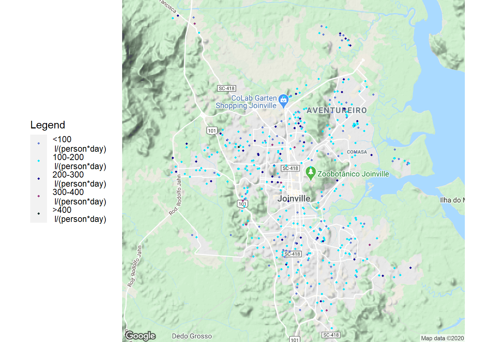
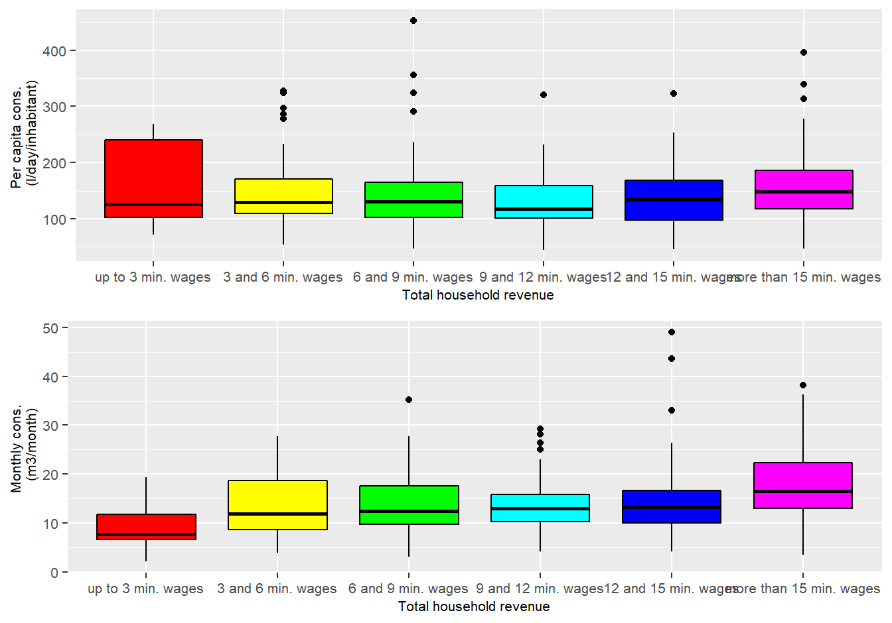
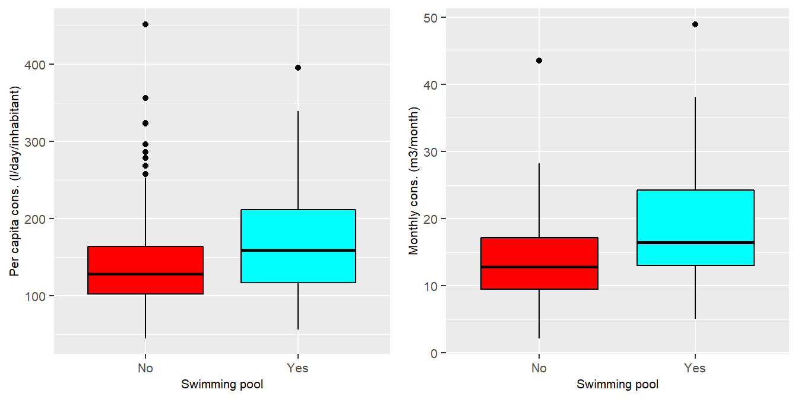

Abstract Understanding the factors influencing urban water consumption is essential for managing water resources. Domestic water consumption represents a significant portion of urban water consumption. The objective of this paper is to evaluate how socioeconomic variables related to residents and constructive variables related to households influence the domestic water consumption in the city of Joinville. Monthly water consumption, constructive characteristics and socioeconomic data from 394 households were analyzed. The analysis includes detailed descriptive statistics of monthly water consumption per household and daily per capita water consumption, in addition to socioeconomic and constructive variables. The analysis of descriptive statistics enhanced the understanding of the effects of the independent variables on the dependent variables monthly water consumption and per capita water consumption. Also, regression tree was applied to the data set. Amidst the findings, the variable income had a positive correlation with water consumption, whereas the number of members of a household had a negative correlation with per capita water consumption.
1. Introduction
Sustainable management of the urban consumption of natural resources is possible not just by knowing how much resource consumption occurs, where and when it occurs, but knowing the mechanisms influencing consumption is also indispensable (Voskamp et al; 2020).
Voskamp et al. (2020) present a literature review on the factors influencing urban consumption of natural resources. According to the authors, factors influencing water consumption within a city can be categorized as demographic, economic, such as level of economic development, political, such as rules and regulations, cultural, such as environmental awareness, technological, such as technological inventions, spatial, such as population density and building type, infrastructural, such as size of the supply network, resources characteristics, such as price and availability, personal consumer characteristics, such as income level, and decision making, such as behavior.
However, all these factors may be strongly correlated. For example, price, income and education influence water conservation behavior (Koop, Dorssena & Brouwer; 2019).
Intense urban expansion and socio-demographic changes in households, are major causes of rising water demand in developed countries (Garcia, 2013). The goal of this study is to evaluate which factors have a significant impact in water consumption in the city of Joinville, using socioeconomic variables related to residents and constructive variables related to households and applying regression tree.
2. Material and methods
This study was realized analyzing data from households in Joinville, Southern Brazil. Joinville is the largest city in Santa Catarina State and has the greatest GDP (IBGE,2017), with a Human Development Index (HDI) of 0.809 (IBGE, 2010). The estimated population of the city is 590,466 (IBGE, 2019), spread in an area of 1127.946km2 (IBGE, 2018).
The sample consists in 394 households spread through the different regions of the city.Figure 1 shows the 394 households spread throughout the city using dots. It also differentiates the households by color, accordingly with the per capita consumption.
 Figure 1 - Map of Joinville city, with the households represented as dots colored accordinglt with the percapita water consumption
The application of the survey was made accordingly with the population of each region; thus, the sample has the same distribution within the regions as the population. Water consumption was analyzed as a dependent variable. The monthly water consumption (in m3 per month) data was provided by the municipal water supply company. The per capita water consumption (in liters per person per day) was calculated and used as a dependent variable. Data related with building features and demographic characteristics of the sample were obtained through the survey. Thus, 57 independent variables were analyzed, evaluating the correlation between each variable and monthly and per capita water consumption.
The survey was designed considering factors that the scientific literature suggests to relevant when evaluating the impact on urban water consumption. Thus, the survey was structured in four parts: 1) where the residential unity is located and its surroundings; 2) socioeconomic and demographic aspects of the inhabitants; 3) constructive characteristics and equipment installed in the building; 4) water consumption behavior. The questions were of two types: multiple choice questions and short answer question receiving numerical data as input.
3. Theory/calculation
4. Results
The number of inhabitants in the household is one of the variables that had a significant influence on the monthly and per capita consumption. Figure 1 shows the box plot for both cases.
 Figure 1 - Box plot of monthly and per capita consumption considering the number of inhabitants
The greater is the number of inhabitants, the higher is the average monthly consumption. Still, the number of inhabitants has the opposite effect on per capita consumption. The Anova test was applied, confirming the statistical significance of the effect (Pr < 0.15). One explanation might be that a household unit has an intrinsic demand for water that allows it to be kept livable, demand which is distributed between the inhabitants when the per capita consumption is calculated. Hence, the greater is the number of inhabitants, the lesser is the effect of this demand in the per capita consumption. Other variable may contribute to this result for per capita consumption, which will be discussed along with the result of this variables.
Figure 2 shows box plot comparing consumption of houses that have a pool and houses that do not have one.
 Figure 2 - Monthly and per capita consumption considering houses having or not having a pool
Both monthly and per capita consumption are higher for houses that have a pool. The two-sample t-test was conducted and confirmed the difference when the house has a pool in the monthly (p<0.15) and per capita (p<0.15) consumption.
The age of the building also showed itself to be a significant factor that impacts urban water consumption in Joinville city. Figure 3 shows boxplot comparing consumption of buildings that are until 10 years old and building that are older than 10 years.
The box plot presented in Figure 3 suggests that water consumption is higher when the building is older than 10 years. The two-sample t-test conducted confirmed that age of the building is an important factor for monthly (p<0.15) and per capita (p<0.15) water consumption.
5. Discussion
6. Conclusions
References
VanDecar J.C., Russo R.M., James D.E., Ambeh W.B., Franke M. (2003). Aseismic continuation of the Lesser Antilles slab beneath northeastern Venezuela. Journal of Geophysical Research, https://doi.org/10.1029/2001JB000884.
Garcia X., Muro M., Ribas A., Llausàs A., Jeffrey P., Saurí D. (2013). Attitudes and behaviours towards water conservation on the Mediterranean coast: the role of socio-demographic and place-attachment factors. Journal Water International, https://doi.org/10.1080/02508060.2013.794641.
IBGE.InstitutoBrasileirodeGeografiaeEstatística. 2010. Available online: https://cidades.ibge.gov.br/brasil/ sc/joinville/panorama (accessed on 06 of May of 2020).
IBGE.InstitutoBrasileirodeGeografiaeEstatística. 2017. Available online: https://cidades.ibge.gov.br/brasil/ sc/joinville/panorama (accessed on 06 of May of 2020).
IBGE.InstitutoBrasileirodeGeografiaeEstatística. 2018. Available online: https://cidades.ibge.gov.br/brasil/ sc/joinville/panorama (accessed on 06 of May of 2020).
IBGE.InstitutoBrasileirodeGeografiaeEstatística. 2019. Available online: https://cidades.ibge.gov.br/brasil/ sc/joinville/panorama (accessed on 06 of May of 2020).
Koopa S.H.A., Van Dorssena A.J., Brouwera S. (2019). Enhancing domestic water conservation behaviour: A review of empirical studies on influencing tactics. Journal of Environmental Management, https://doi.org/10.1016/j.jenvman.2019.06.126.
Voskampab I. M., Suttona N. B., Stremkebc S., Rijnaartsa H. H. M. (2020). A systematic review of factors influencing spatiotemporal variability in urban water and energy consumption. Journal of Cleaner Production, https://doi.org/10.1016/j.jclepro.2020.120310.